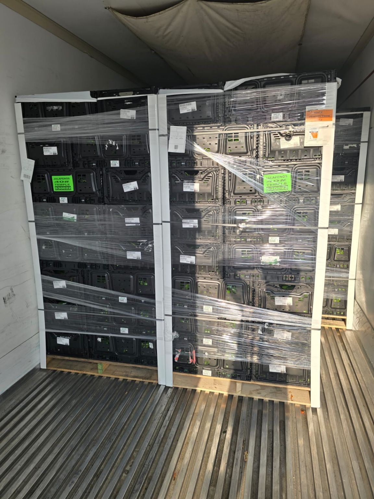

53-Foot Reefer Trucks
Truckload refrigerated trailers for meat, produce, frozen food, dairy, seafood, floral, and pharmaceutical freight.
Houston Reefer & Cold Chain Freight
UR Freight 365 arranges temperature-controlled freight for Houston shippers — fresh, chilled, frozen, and deep-frozen loads down to -10°F. Meat, poultry, seafood, produce, dairy, frozen foods, floral, and pharmaceutical cold chain, coordinated by a freight desk built around clear communication.
53-foot reefers · fresh/chilled through deep-frozen -10°F · Houston cold chain focus.
Services
53-foot refrigerated equipment, precise load intake, and practical operating options for appointment-driven cold chain freight.
Truckload refrigerated trailers for meat, produce, frozen food, dairy, seafood, floral, and pharmaceutical freight.
Drop and hook at meat plants and distribution centers, plus drop and trade or trailer interchange when operations require it.
Appointment-aware live loading and unloading with dock coordination, seal notes, receiver hours, and fast communication.
Temperature monitoring, pre-cool expectations, set-point confirmation, and food-safe sanitary trailer requirements captured before dispatch.
Freight we've moved for Texas produce leaders
UR Freight 365 has arranged temperature-controlled reefer freight for Texas produce operations — jalapeños, watermelons, onions, cabbage, bell peppers, and cross-border avocado lanes between Mexico and U.S. distribution centers. Pre-cooled equipment, set-point confirmation, and delivery timing handled before dispatch.
Quote Produce FreightCommodity coverage
From meat and seafood to frozen potatoes and medical supplies — the freight your customers actually ship.
Produce-focused reefer intake for pulp temperature, ventilation, humidity expectations, and receiver appointment control.
Truckload produce coverage for high-volume seasonal melon moves with weight, appointment, and lane details confirmed before dispatch.
Cross-border and domestic produce support for foodservice, grocery, market, and distribution-center delivery networks.
French fries, frozen potatoes, and frozen meals — frozen and deep-frozen coverage for cold storage, processors, and distribution.
Temperature-sensitive load planning for healthcare and medical-supply freight that requires accurate instructions and dependable communication.
Fresh/chilled through deep-frozen -10°F — commodity, weight, set point, pre-cool, and handling notes captured up front.
Operating model
53-foot reefer equipment, drop and hook, live loading, trailer interchange, sanitary trailers, pre-cool expectations, temperature monitoring, and clear status updates.
FAQ
Fresh, chilled, frozen, or deep-frozen requirements, including loads with set points down to -10°F.
Yes. Include plant rules, trailer-pool expectations, drop timing, pickup numbers, seal instructions, and whether drop and trade or interchange is required.
Commodity, pallet count, weight, origin, destination, pickup window, delivery appointment, set point, pre-cool requirements, and receiver hours.
Share washout, odor-free, sanitary-trailer, seal, pulp-check, and special-handling requirements in the quote request.
On the reefer
Palletized produce, pre-cooled and staged — genuine reefer freight for Texas produce shippers.



Share commodity, weight, set point, pickup window, and delivery appointment — we follow up on appointment numbers, seal notes, and pulp temperature.
UR Freight 365 LLC arranged transportation for the shippers named on this page as a freight broker, operating through licensed broker partner Booking Logistics LLC (MC-1503468). Client names reflect freight brokerage service history only — no affiliation, partnership, or endorsement is implied.